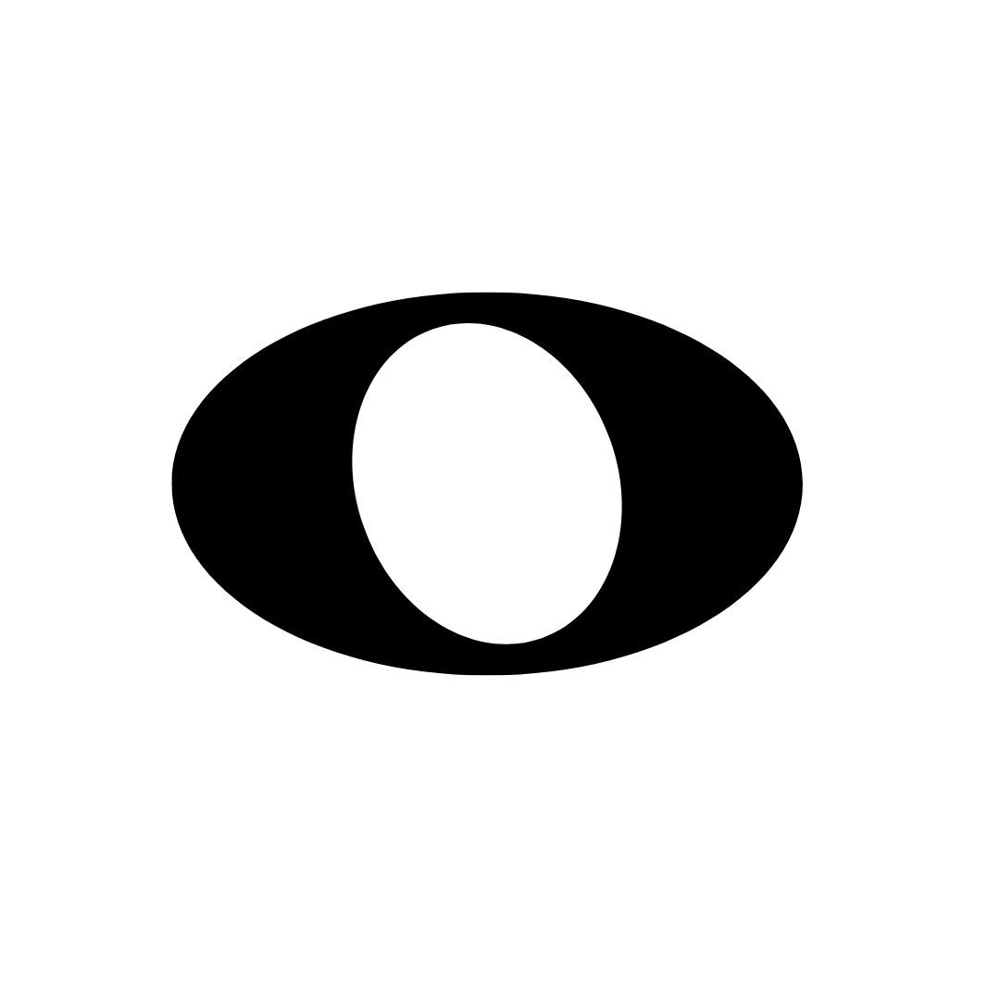

Redonda · 4 tiempos
Gesto: autoabrazo sostenido todo el compás.

Gesto: autoabrazo sostenido todo el compás.
Programa didáctico
Primero lo sentimos en el cuerpo, luego lo llevamos al instrumento. Todo lo que entra por el cuerpo se asimila mejor: el pulso, la subdivisión y la coordinación se vuelven naturales; después lo transferimos a notas individuales o incluso acordes.
Practica primero con percusión corporal. Cada figura tiene su gesto:
Luego, los mismos patrones pueden tocarse en tu instrumento con notas individuales o incluso acordes.
Referencia visual de los símbolos.
Cada recuadro representa un compás de 4/4 con una redonda. Se ilumina completo mientras suena el metrónomo.
Dos blancas por compás en 4/4. Cada recuadro dura 2 pulsos.
Cuatro negras por compás en 4/4. Cada recuadro dura 1 pulso.
Mezcla automática de redondas, blancas y negras. Siempre suma 16 tiempos (4/4 × 4 compases) y alterna figuras.